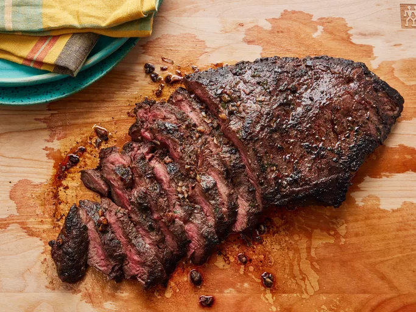

Steak Recipe

Description
This simple flat iron steak marinade (made with olive oil, garlic, parsley, rosemary, chives, red wine, salt, pepper and mustard powder) ensures flavorful and juicy meat every time.
Make sure you marinate the steaks in the fridge for at least a few hours to reap the full benefits of the marinade.
Ingredients
- 1 (2 pound) flat iron steak (or other preferred cut)
- 2 ½ tablespoons olive oil
- 2 cloves garlic, minced
- 1 teaspoon chopped fresh parsley
- ¼ teaspoon chopped fresh rosemary
- ½ teaspoon chopped fresh chives
- ¼ cup Cabernet Sauvignon (or other dry red wine)
- ½ teaspoon salt
- ¾ teaspoon ground black pepper
- ¼ teaspoon dry mustard powder